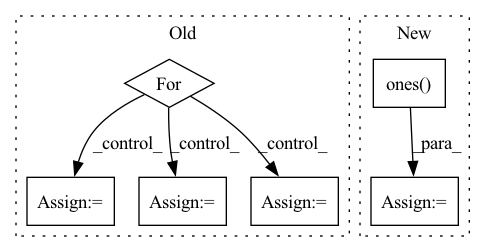

Pattern ID :35580
Before Change
if deltas is not None and changepoints_t is not None:
gammas = -changepoints_t * deltas
for s, t_s in enumerate(changepoints_t):
indx = t >= t_s
k_t[indx] += deltas[s]
m_t[indx] += gammas[s]
return k_t * t + m_t
After Change
past_changepoint = np.expand_dims(t, 1) >= np.expand_dims(changepoints_t, 0)
segment_id = np.sum(past_changepoint, axis=1) - 1
k_t = np.ones( (len(t), 1)) * np.expand_dims(k, 0)
m_t = np.ones((len(t), 1)) * np.expand_dims(m, 0)
k_t = np.squeeze(k_t[np.arange(len(t)), segment_id])
m_t = np.squeeze(m_t[np.arange(len(t)), segment_id])
trend = k_t * t + m_tIn pattern: SUPERPATTERN
Frequency: 3
Non-data size: 6
Instances Fragment ID: 101477902
Project Name: ourownstory/neural_prophet
Commit Name: 8dcdd6a5e564ef4412c327d2550025a5647b63a6
Time: 2020-05-22
Author: oskar.triebe@merantix.com
File Name: code/utils.py
M Class Name: AnonimousClass
N Class Name: AnonimousClass
M Method Name: piecewise_linear(4)
N Method Name: piecewise_linear(5)
M Parent Class:
N Parent Class:
M File Name: code/utils.py
N File Name: code/utils.py
M Start Line: 21
M End Line: 47
N Start Line: 51
N End Line: 62
Before Change
criterion_torch = TripletMarginLoss(reduction=reduction, margin=margin)
criterion_our = TripletLoss(reduction=reduction, margin=margin, need_logs=True)
for _ in range(10):
anchor = torch.rand(32, 1024)
positive = torch.rand(32, 1024)
negative = torch.rand(32, 1024)
x_torch = criterion_torch(anchor, positive, negative)
x_our = criterion_our(anchor, positive, negative)After Change
criterion_our = TripletLoss(reduction=reduction, margin=margin, need_logs=True)
anchor = 1 * torch.ones(32, 1024)
positive = 2 * torch.ones( 32, 1024)
negative = 3 * torch.ones(32, 1024)
x_torch = criterion_torch(anchor, positive, negative)
x_our = criterion_our(anchor, positive, negative) Fragment ID: 101478152
Project Name: oml-team/open-metric-learning
Commit Name: d1ba74ba4e46559c2ef18a4ab34c5db970c3fb74
Time: 2022-08-04
Author: shabanoff.aleksei@gmail.com
File Name: tests/test_oml/test_losses/test_triplet.py
M Class Name: AnonimousClass
N Class Name: AnonimousClass
M Method Name: test_triplet_loss_vs_torch_version(2)
N Method Name: test_triplet_loss_vs_torch_version(2)
M Parent Class:
N Parent Class:
M File Name: tests/test_oml/test_losses/test_triplet.py
N File Name: tests/test_oml/test_losses/test_triplet.py
M Start Line: 14
M End Line: 24
N Start Line: 14
N End Line: 21
Before Change
// Self-attention
attn_mask = 1 - valid_his.unsqueeze(1).repeat(1, seq_len, 1)
for i in range(self.num_layers):
residual = his_vectors
// self-attention
query, key, value = self.Q(his_vectors), self.K(his_vectors), self.V(his_vectors)
scale = self.emb_size ** -0.5
his_vectors = components.scaled_dot_product_attention(
query, key, value, scale=scale, attn_mask=attn_mask)
// mlp forward
his_vectors = self.W1(his_vectors).relu()After Change
his_vectors = his_vectors + pos_vectors
// Self-attention
causality_mask = np.tril(np.ones( (1, 1, seq_len, seq_len), dtype=np.int) )
attn_mask = torch.from_numpy(causality_mask).to(self.device)
// attn_mask = valid_his.view(batch_size, 1, 1, seq_len)
for block in self.transformer_block:
his_vectors = block(his_vectors, attn_mask) Fragment ID: 101478154
Project Name: thuwangcy/rechorus
Commit Name: dba1d0bd7b6d7296ed6c730793e0f61278007dc2
Time: 2020-11-08
Author: THUwangcy@gmail.com
File Name: src/models/sequential/SASRec.py
M Class Name: SASRec
N Class Name: SASRec
M Method Name: forward(2)
N Method Name: forward(2)
M Parent Class: GRU4Rec
N Parent Class: GRU4Rec
M File Name: src/models/sequential/SASRec.py
N File Name: src/models/sequential/SASRec.py
M Start Line: 41
M End Line: 72
N Start Line: 41
N End Line: 66
Before Change
if deltas is not None and changepoints_t is not None:
gammas = -changepoints_t * deltas
for s, t_s in enumerate(changepoints_t):
indx = t >= t_s
k_t[indx] += deltas[s]
m_t[indx] += gammas[s]
return k_t * t + m_t
After Change
past_changepoint = np.expand_dims(t, 1) >= np.expand_dims(changepoints_t, 0)
segment_id = np.sum(past_changepoint, axis=1) - 1
k_t = np.ones( (len(t), 1)) * np.expand_dims(k, 0)
m_t = np.ones((len(t), 1)) * np.expand_dims(m, 0)
k_t = np.squeeze(k_t[np.arange(len(t)), segment_id])
m_t = np.squeeze(m_t[np.arange(len(t)), segment_id]) Fragment ID: 101477895
Project Name: ourownstory/neural_prophet
Commit Name: 8dcdd6a5e564ef4412c327d2550025a5647b63a6
Time: 2020-05-22
Author: oskar.triebe@merantix.com
File Name: code/utils.py
M Class Name: AnonimousClass
N Class Name: AnonimousClass
M Method Name: piecewise_linear(4)
N Method Name: piecewise_linear(5)
M Parent Class:
N Parent Class:
M File Name: code/utils.py
N File Name: code/utils.py
M Start Line: 21
M End Line: 47
N Start Line: 51
N End Line: 62